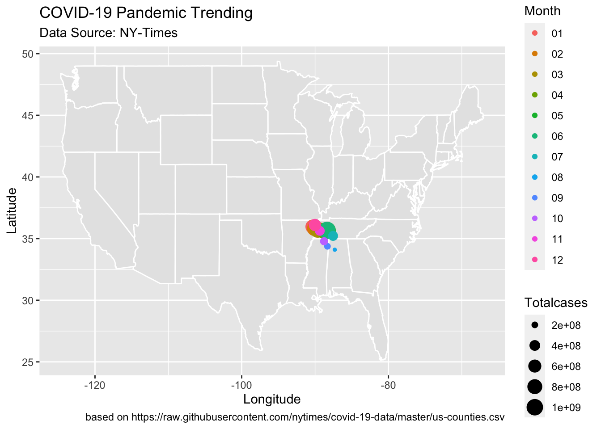
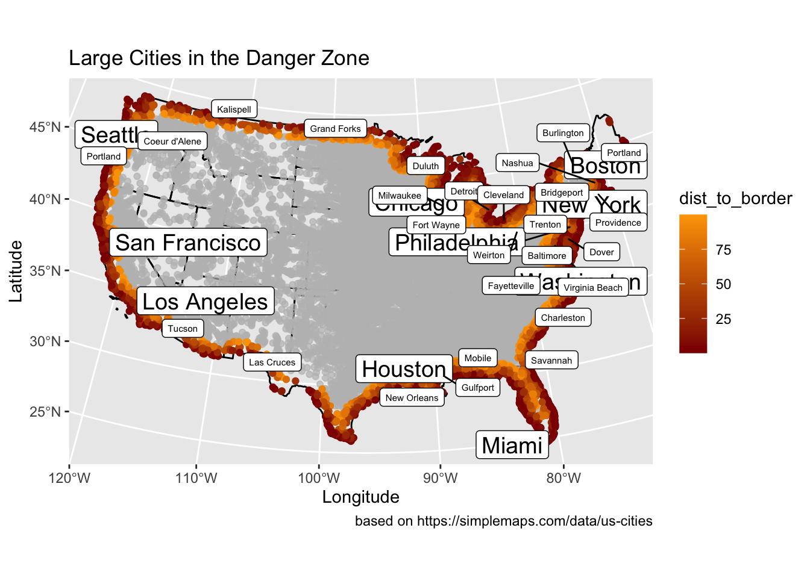
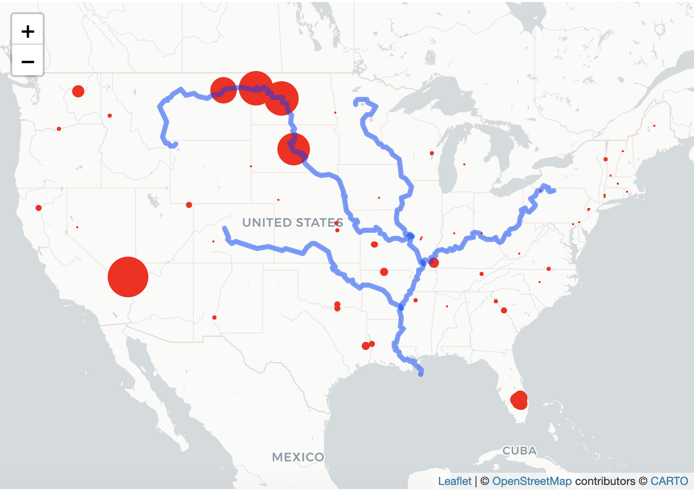
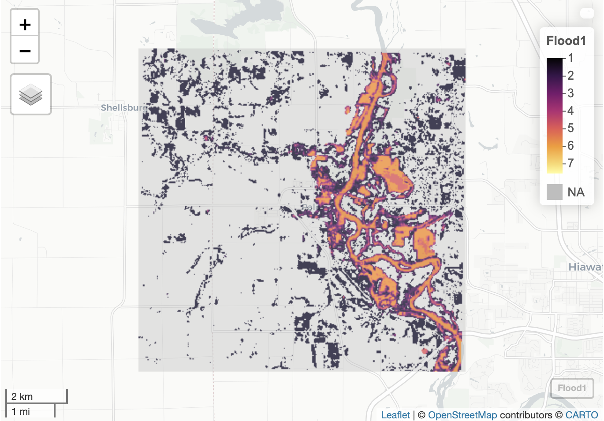
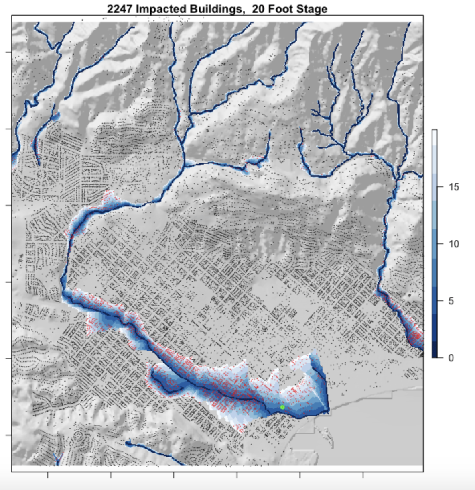

Welcome! This is my personal collaboration of GIS work based on the R
script.
In the first project, I worked with COVID-19 data in
US, monitoring California’s daily new cases, plotting 4 interesting
states’ changes of cases, and evaluating the pandemic trending on space
and time. Here is the link of workflow.
- I was familiar with Rstudio gradually from practices, for instance,
analyzing raw data with packages and plotting, combination of raw data,
and extracting the variables from raw data.
- In the COVID-19 data wrangling, I started to realize the
relationship among data. Data will be influenced by other variables,
chronologically and spatially.
- The structure of the code is important too. Well-structured code is
easier to debug and present.
Here is my highlight in the project:  —
In the project of US border, I figured out the
geographic relationship between US cities and borders of national,
states, and near countries. Then I evaluated the 100-mile Border Zone
described in ACLU
article.
- I learned how to build sf objects from R packages and CSVs, using
computer to program the projection which studied in the Geog w12.
- In the project, I understand the calculation of distance between
geographic objects, such as point, line string and area.
- And I can plot clear map with distance data by ggplot.
Here is my highlight in the project:  —
In the GIS Work of Tessellations, I started to
analyze the geographic points in the polygon, with the functions defined
by myself. With the raw data of dams in the United States, I tried to
find the relationship between the dam distribution and geographic
information.
- Focus: understanding how the tessellation works.
Each tessellation has its own advantages and disadvantages, and
different attributes.
- Achievements:
- Analysis of the dams’ data in the United States with different
tessellation and identifying the difference among them, and define the
numbers of dam in each tiles;
- With the distribution of different types, demonstrating the possible
reasons of the distribution
- Generation of interactive leaflet map, which shows categorical data
of dams in each state within Mississippi River System.
Here is my highlight in the project:  —
In the analysis of flooding, we learned to use
raster layers to analyze the continuous data, a case of flooding in
Palo, Iowa. We used the raster pacakge and raster data knowledge to
create flood images using multiband Landsat Imagery, thresholding and
classification methods.
- First time I deal with the continuous data with raster data model,
and map algebra to analyze elevation, precipitation, and climate.
- In the case of Palo, I use kmean-rasters compared with Landsat band
calculating the flooding cells shared by each layers.
- And I extracted a specific location captured by the drone from
layers to define its value in the raster data.
Here is my highlight in the project: 
In the GIS Work of raster analysis, terrain analysis
is managed by R coding. Mission Creek’s flood event in 2017 in Santa
Barbara, California has been chosen as object, estimating the number of
buildings impacted. In the project, I completed the whole analysis from
collecting data to the assessment of impacts.
- Focus: use OSM data to collect building centroids
and the stream linestring, and process spatial analysis of flooding in
the study area.
- Achievements:
- with the whitebox, create hillshade raster of Santa Barbara area and
HAND raster for flooding cell values.
- The correcting of elevation is important in the data, which will
impact the precision of analysis.
- In the final step, overlay all raster layers into one, indicating
the impacted buildings when the creek flooded.
- create a gif for Mission Creek’s flood inundation map library from 0
to 20 foot.
Here is my highlight in the project: 